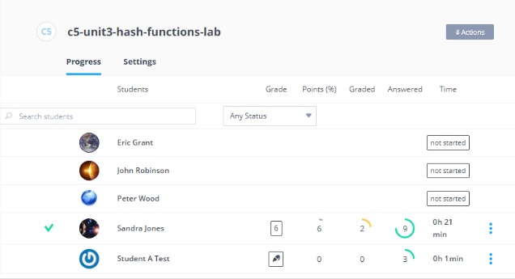
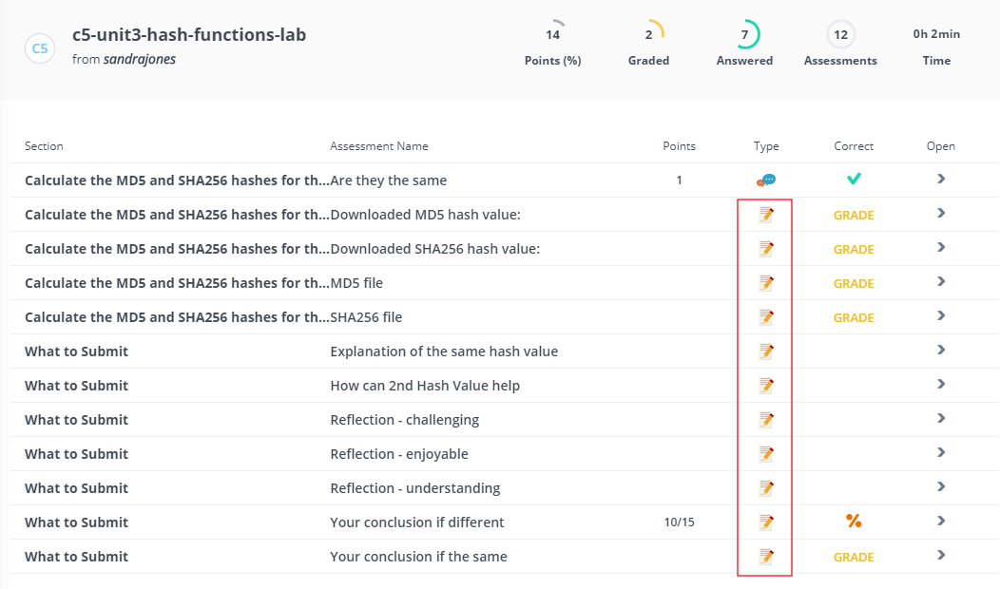
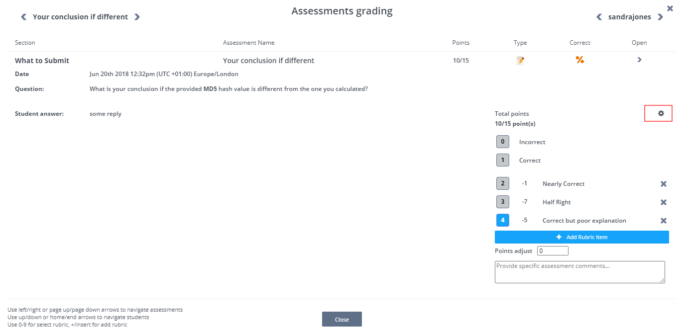

Grading Free Text Questions¶
Free text questions normally require a manual grading process. Follow these steps to grade free text questions:
Open the assignment and view the list of students.

Click a student name to view the list of all assessments for that student within the assignment. Free text questions are denoted by the icon highlighted in the following screenshot.

If a student has started to answer a question but has not yet submitted it, DRAFT is shown next to it. Once the answer is submitted, GRADE is shown next to it indicating that the question has been submitted and is ready to be graded. If a course deadline has been reached, you can grade questions that are set to DRAFT and questions with partial answers.
You can also see the date and time for each submitted answer as well as the date that the assignment was marked as complete by the student.
Partial point assessments that do not have full points awarded are indicated by the following icon:

Review the assignment and answers submitted by the student. Use the following information to enter your grade.
Partial point rubric - If an answer allows partial points, a rubric is displayed to allow you to dynamically deduct points from the maximum score. You can add an item, change an item weight, or remove an item. The changes are applied for all students in the assignment, including already graded student assignments. The rubric is dynamic for each assignment, and every new assignment starts with an empty rubric.

Every rubric item is includes the item weight and item name. If an item or multiple items are selected, the weight is deducted from student’s score (cannot be a negative score).
Points adjust - The Points adjust field allows the you to manually adjust the student’s total score without having to edit the rubric.
Comments - Use the Comments text box to provided feedback to the student.